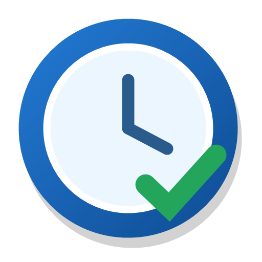

01
Compact by design
The small always-on-top display remains visible without covering your work. It highlights on hover, and any edge or corner can resize it.
01:24:37

Productivity TrackerA compact stopwatch and countdown timer that stays above your work, pauses when your session locks, and can optionally pause on social media.
Version 2.5.0 · Free and open source · Windows x64 · macOS arm64 and x64
Productivity Tracker keeps the controls simple while handling the details that ordinary stopwatches miss.
The small always-on-top display remains visible without covering your work. It highlights on hover, and any edge or corner can resize it.
Set any hours, minutes, and seconds. Pause or resume with middle-click and get a sound plus visual alert at zero.
Start and stop instantly with the mouse-wheel button, or add hours and minutes before resuming.
Timers pause when Windows or macOS locks and can optionally pause on social media or WhatsApp Web in Edge and Chrome.
When a countdown reaches zero, Productivity Tracker plays a sound and flashes the timer and operating-system app indicator.
Resize it freely, choose from five transparency levels, drag it anywhere, or minimize it to the taskbar.
Drag the timer to any convenient corner of your screen.
Middle-click whenever focused work begins or ends.
Locked-session time is removed automatically on Windows and macOS.
The timer surface is the primary control. Right-click only when you need additional options.
Choose the build for your computer. Focus Protection remains optional on every platform.
x64 per-user installer
Download Windows Requires .NET 8 Desktop RuntimeNative arm64 AppKit app
Download arm64 macOS 12 or laterNative x64 AppKit app
Download x64 macOS 12 or later